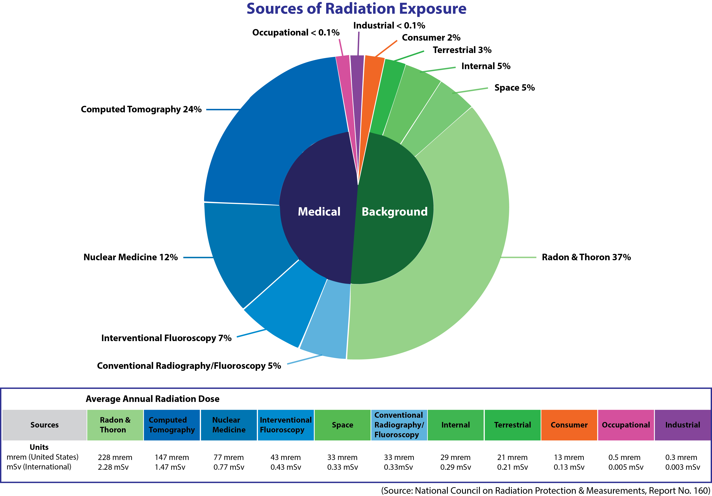
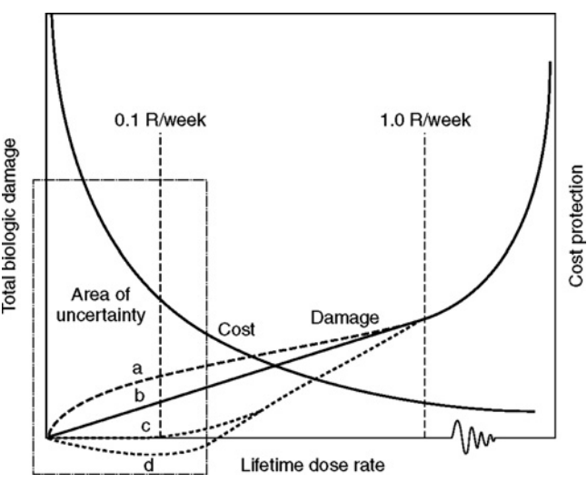
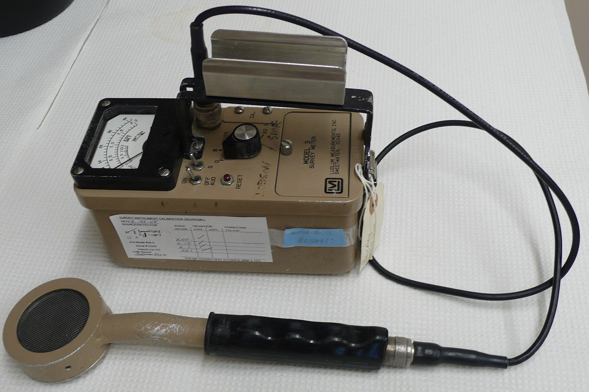

X-ray – generating machines (CT simulator and Linac)
the NRC regulated materials (agreement states only; the NRC definition: an agreement state is a state that has signed an agreement with the NRC authorizing the State to regulate certain uses of radioactive materials within the State.)
Food and Drug Administration (FDA)
Manufacture and sale of machines and TPS’s (501K clearance)
Department of Transportation (DOT)
Safe transport of radioactive materials
Hospitials are typically under specific licenses of broad scope for byproduct material (“broad licenses”). The details can be found in 10 CFR Part 33. For CCF, we are under a Type-A broad scope byproduct license, which is a specific license authorizing receipt, acquisition, ownership, possession, use, and transfer of any chemical or physical form of the byproduct material specified in the license, but not exceeding quantities specified in the license, for purposes authorized by the Act. The quantities specified are usually in the multicurie range. There are also Type B and C specific license of broad scope for licensees in using one and/or two isotopes and limited quantities.
To apply for the Type-A broad license, a radiation safety committee should be established and consists of certain personnel. Which of the following should not be part of the safety committee? a) a radiation safety officer, b) an authorized user, c) department chairman, d) a representative of management who is neither the RSO nor an authorized user, and e) a nurse. Answer: a), b), d), e)
International Commission on Radiological Protection (ICRP)
Proceedings of the Forth International Symposium on the System of Radiological Protection 2018
Publicatin 103 “The 2007 Recommendations of the International Commission on Radiological Protection”
The International Commission of Radiation Units and Measurement (ICRU)
Report 79 “ROC Analysis in Medical Imaging”
National Council on Radiation Protection and Measurement (NCRP)
Report 151 (2005) “Structural Shielding Design and Evaluation for Megavoltage X- and Gamma-Ray Radiotherapy Facilities”
Report 160 (2009) “Ionizing Radiation Exposure of the Population of the United States”
American College of Radiology (ACR)
American Society of Radiotherapy (ASTRO)
The Joint Commission on Accreditation of Healthcare Organizations (JCAHO)
American Association of Physicists in Medicine (AAPM)
If you are an AAPM member, you can read pubished reports ICRP, ICRU, and NCRP from here.
16.2 Sources of radiation exposure
According to the NCRP Report 160, the average annual radiation dose per person in the U.S. is about 6.2 mSv (see next section), in which medical imaging contributes about 50% (e.g. CT: 24%, NM: 12%, interventional fluoroscopy 7%, conventional radiography 5%). Naturally occurring sources of radiation include cosmic radiation2 (5%), radioactive minerals in the ground and in your body (5%), and terrestrial radiation emitted by naturally occurring materials such as uranium, thorium, and radon (37%) in earth.

Figure 16.1: The pie chart of sources of radiation exposure from NCRP 160 can be found here.
16.3 Effects of Radiation Exposure
The sensitivity of cells to irradiation is in direct proportion to their reproductive activity and inversely proportional to their degree of differentiation.
Exposure to ionizing radiation can produce several effects in an individual, depending on the type and amount of radiation producing the exposure, the fraction of the body that is exposed, the general health of the exposed individual, the quality of medical care available in the event of a relatively high exposure.
16.3.1 Stochastic (probabilistic) effects
Biological effects (such as carcinogenesis, teratogenesis, and mutagenesis) that appear several months or years after exposure to radiation have several characteristics in common:3
The probability of occurrence of the effect (i.e., the number of persons in an exposed population who exhibit the effect) increases with dose;
The severity of the effect in a single individual is unrelated to the magnitude of the dose (i.e., the effect is an “all or none” response);
No definitive threshold exists below which it can be said with certainty that the effect will not occur.

Figure 16.2: Glaus W. The concept and philosophy of permissible dose to radiation (1958).
16.3.2 Deterministic radiation effects
Deterministic effects are those effects that exhibit a dose threshold. Those acute effects, known as acute radiation syndromes (ARS), is an acute illness caused by irradiation of the entire body (or most of the body) by high dose of penetrating radiation in a very short period of time (~minutes). ARSs include:
hematopoietic (bone marrow) syndrome (0. Gy to 10 Gy)
gastrointestinal syndrome (> 10 Gy)
cerebrovascular syndrome (> 50 Gy).
Which of the following is best described as a stochastic event? a) Skin erythema; b) Epilation (hair loss); c) Lens opacification; d) Tissue necrosis; e) None of the above. Answer: e
You would be exposed to about 0.035 mSv (another estimation is 1-3 \(\mu\)Sv/h) of cosmic radiation if you were to fly within the United States from the east coast to the west coast, which is still less than that from a chest x-ray (Personal Annual Radiation Dose Calculator from NRC could be found here).
Estimate the radiation dose to a medical physicist/radiation oncologist during a breast IORT procedure. If the reading from survey meter is about 200 mR/hr and delivery time is half an hour, the radiation reaches the whole body (after lead apron ~0.5 mm thickness, it is about one TVL for x-ray with 50 kvp) will be about 10 mR which is about 0.1 mSv.
16.4 Dosimetric Quantities for Radiation Safety
There are a number of reasons for the confusion. In part, it’s the usual disparity between standard metric units and the less-standard units favored in the United States, added to the general confusion of reporters dealing with a fast-changing situation (for example, some early reports mixed up microsieverts with millisieverts — a thousandfold difference in dose). Others are more subtle: The difference between the raw physical units describing radiation emitted by a radioactive material (measured in units like curies and becquerels), versus measurements designed to reflect the different amounts of radiation energy absorbed by a mass of material (measured in rad or gray), and those that measure the relative biological damage in the human body (using rem and sieverts), which depends on the type of radiation.
16.4.1 Equivalent dose
The equivalent dose is the mean absorbed dose in a tissue or organ (DT,R) weighted by the radiation weighting factor (wR) for the type and energy of radiation:
The \(w_R\) is equal to 1 for photons and electrons, 2 for protons, and 20 for \(\alpha\) particles, fission fragments, and heavy ions.
16.4.2 Effective dose (E)
Effective dose applies only to stochastic effects. The effective dose is the sum over specified organs and tissues of the products of the equivalent dose in an organ or tissue (HT) and the tissue weighting factor for that organ or tissue (wT):
\[\begin{equation}
E = \sum_T w_T \times H_T,
\tag{16.2}
\end{equation}\]
The tissue weighting factors have been developed from a reference population of equal numbers of both males and females and a wide range of ages (ICRP #103).
The SI unit for equivalent dose and effective dose is joule per kilogram (J/kg) with the special name Sievert (Sv) (ref). Because 1 Sv is rather large quantity ((equal to 1 Gy numerically), the milliSievert (mSv) is commonly used in practice4.
A chest x-ray delivers an absorbed dose of 10 mrad to the lungs. a) What is the value of the effective dose? b) What is the risk of developing a fatal cancer as a result of this x-ray exam? a) The unit of rad is a depreciated unit for the absorbed dose, and 1 rad = 1 cGy. Based on ICRP report 103 Table 3, the weighting factor for lung is 0.12. Using Eq. (16.1) and (16.2), \(E = w_{T=Lung} \times (w_{R=Photon} \times D_{T=Lung, R=Photon}) =\)0.012 mSv.
b) According to the NRC, the risk is the excess lifetime risk of developing a fatal cancer due to radiation exposure is 4 \(\times\) 10-2 Sv-1. Therefore, the risk is 0.012 mSv \(\times\) 4 \(\times\) 10-2 Sv-1 = 4.8 \(\times\) 10-7.
If the annual effective dose from radon exposure is 200mrem
Exposure to radiation has been shown to cause genetic effects in humans? True or False.
Of the 120,000 atomic bomb survivors that have been followed, the total number of excess cancers as of 1990 has been _____sfasdfasdf______.
The effective dose from a CT scan is approximately ________ times the average annual effective dose.
There is some evidence that a few abdominal x-ray images of a pregnant patient can double the likelihood of childhood cancer. True or False.
Which personnel must wear radiation badges?
What is the purpose of the use of filters in radiation badges? CHAP.
An 18 MV linac treats 40 patients per day, 5 days per week. If the average number of fields per patient is 2 and the average dose per field is 100 cGy, what is the workload for primary barriers?
What is the numerical value of the use factor in a secondary barrier calculation? Why?
What materials are used to shield against neutrons in radiation therapy room doors?
What types of linacs require such shielding?
Three therapists work at the treatment console of a linear accelerator. What value should be used for the occupancy factor? Justify your answer.
What is the current NRC total effective dose limit for a) radiation workers and b) members of the general public?
What information is required as part of the written directive for a high dose rate brachytherapy treatment?
Under what conditions can a patient with a radioactive implant be released from the hospital?
To avoid unacceptable complications, normal tissue should be below a tolerance dose (TD) (Emami et al.) Complications is categorized as fatal, severe (e.g. grade 3-4 pneumonitis), and quality-of-life complications. TD5%/5 and TD50%/5 are used to imply complications in 5 years.
16.5 Principles of Radiation Protection
16.5.1 TDS rule
Time (\(D \propto \dot{D}\times \Delta t\)), distance (inverse square law), and shield (attenuation) measures are major factors in consideration of minimizing the unavoidable radiation exposure. Other procedures to minimize the exposure are containment and NRC’s system for radiation protection according to NRC guidelines. The NRC’s system for protection includes:
dose limits for radiation workers and members of the public;
monitoring and labeling radioactive materials;
posting signs in and around radiation areas;
reporting the theft or loss of radioactive material.
In addition, the NRC imposes penalties for failures to follow the agency’s regulations.
This design goal for an uncontrolled area is 0.02 mSv/week (about 1 mSv annually for frequent or continuous exposure) or for a controlled area is 0.1 mSv/week (about 5 mSv annually – this is lower than the recommended value of 50 mSv but is based upon the ALARA principle).
16.6.1 Dosimetric Quantities for Shielding Design
The quantity recommended in NCRP Publication 151 for shielding design calculations when neutrons and photons are present is dose equivalent (H). Dose equivalent is defined as the product of the quality factor, (QL), for a particular type of ionizing radiation and the absorbed dose (D) from that type of radiation at a point in tissue (ICRU Publication, 1993). The units of dose equivalent are also J/kg with the special name sievert (Sv).
Table 16.1: Quality factor relationship
Unrestricted linear energy transfer L (kV/\(\mu\)m)
Figure 16.4: THe first and equivalent tenth-value layer for concrete, steel, and lead.
The control room of an 18 MV linear accelerator is shielded by the primary concrete barrier of the treatment room. When the beam is pointed toward the control room, the distance from the linac target to a point of protection (1 ft beyond the wall) is 6.6 m. a) Assuming a workload of 103 Sv/wk, what barrier transmission is necessary to reduce the exposure to 0.1 mSv/wk? b) How many TVL are necessary? c) If the TVL for an 18 MV beam is 43 cm in concrete, what is the required thickness of this primary barrier?
16.6.7 Conservation
The conservative safe nature of the shielding design includes:
attenuation of the primary beam by the patient is neglected (30%);
perpendicular beam incident;
maximum leakage (0.001) radiations form the equipment;
recommended high occupancy factors for uncontrolled areas;
a distance of 0.3 m from the wall (most likely it is more than 0.3 m from the wall);
the “two-source” rule: more penetrating radiation is selected.
In designing structural shielding for a 10 MV linear accelerator vault, the beam quality is taken as: a) 10 MV for the primary beam, b) 10 MV for the leakage radiation, c) 3.3 MV for the scattered radiation at all angles, and d) 0.511 MeV for scattered radiation at 90°. The shield design is very conservative. When considering the beam energy for barriers, the highest possible beam energy is used in the calculation. (a, b, d)
A radiation survey is required after linacs are installed in the vault. Typically, a Geiger-Müller (GM) counter, a large-volume pressurized ion chamber, and a BF3 proportional counter (if high energy photons are installed) are used to perform this task.
16.7.1 Detectors
Which of the following detectors may be used to determine the adequacy of a primary barrier? a) Ionization chamber survey meter; b) Geiger-Müller (GM) counter; c) Farmer-type ionization chamber; d) Scintillation detector; and e)BF3 proportional counter
Answer: a)
A GM counter is used to detect the presence of radiation, which consists of a tube filled with lower pressure (~ 0.1 atmosphere) inert gas (98% helium and 1.3% butane). For radiation survey, it is used to detect potentially unexpected large exposure due to deviation of construction from the planned schematic. In contrast to measuring average current produced over many interactions as in an ion chamber, the reading is recorded for each individual interaction in a GM detector. Therefore, a GM counter suffers its inability (due to dead time5 of the tube) to measure high exposure rate from a linac even behind barriers. In addition, a GM counter cannot distinguish the energy (e.g. 6 MV and 15 MV) of the incident radiation.

Figure 16.5: A GM counter with a pancake probe (wiki)
A (large volume pressurized ion chamber) survey meter is used to quantify the exposure behind barriers.
A farmer-type ionization chamber is most commonly used for linac output measurements. It is not suitable for survey measurement due to its small detection volume, about 0.6 cc (about 230 cc for a Fluke 451P survey meter).
A scintillation detector is designed (a scintillator plus a photo-multiplier) to detect small signals. For example, a liquid scintillation counter is used to detect removable I-125 contamination on swabs. According to the NRC’s guideline on the seed localization for low dose rate brachytherapy, a low energy gamma scintillation survey meter is required for as a part of emergency response equipment (others include gloves, reverse action tweezers, shielded containers, and caution radioactive material (CRAM) labels.
A BF3 proportional counter is most commonly used for neutron detection. A BF3 counter is an active monitoring (passive monitoring: bubble detectors, TLDs) device that uses Boron to capture neutrons.
More information about radiation monitoring devices can be found on IAEA presentation.
16.7.2 Patient release
A licensee may release a patient with radiopharmaceutical material only if it is ensured that the activity remaining in the patient is less than 30 \(\mu\)Ci and the dose rate at 1 m from the patient is less than 5 mrem/hr.
Cosmic radiation is produced when primary photons and α particles from outside the solar system interact with components of the earth’s atmosphere. A second source of cosmic radiation is the release of charged particles from the sun, which become significant during periods of solar flare (‘sun storm’).↩
Precise estimates of the role of an initiating agent such as radiation in producing stochastic effects are difficult to obtain because the effects also occur in the absence of radiation.↩
Historically, the unit of millirem (mrem) was widely used in US (rem stands for Roentgen Equivalent Man). The relationship between mSv and mrem is, 1 mSv = 100 mrem.↩
The dead time is the time it takes for the GM detector to reset (for the readout circuit). During this reset process, the GM counter does not measure any radiation.↩